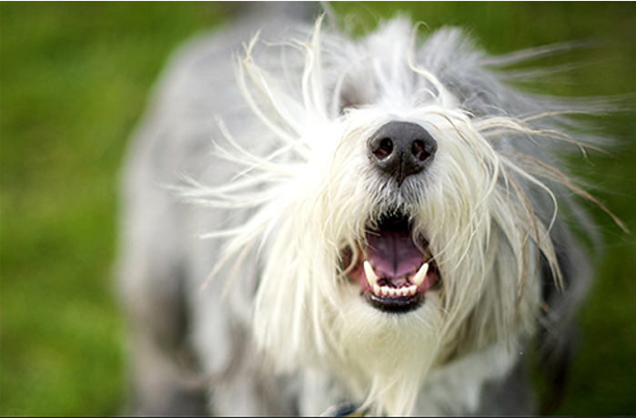

|
집에서 반려견이 너무 짖어요! 등록일:2023.08.09

반려견이 짖는 이유는 많이 있어요. 그들은 자신의 감정을 표현할 줄 하는 동물이고, 소리로 그 감정을 표현할 수 있기 때문에 반려견이 느끼는 감정을 소리로 표현하는데, 우리
는 이것을 짖는다고 말하죠. 반려견의 짖음은 일반적으로 환영받지 못하기 때문에 보호자가 짖는 이유가 궁금하였다기보다는 짖는 소리를 멈추고 싶어 하죠. 짖는 이유를 알면
그럼 짖음을 멈출까? 그건 한번 생각해 봐야 해요. 왜냐면, 어쩜 내가 제공하고 있는 환경이 짖게 만들었고, 나의 대처 행동이 반려견의 짖음을 부추겼을지 모르기 때문이에요.
많은 상담을 하면서 반려견의 짖는 행동을 통제하고 싶어 하는 보호자를 자주 만나요. 반려견이 짖는 이유는 다양하지만, 그 문제를 해결하는 시작은 항상 반려견과 보호자의
관계에 대한 이야기로 시작하지요.
여기서 말하는 반려견과 보호자의 관계란? 어려운 게 아니에요. 좋아하는 쪽과 좋아하는 쪽이 서로를 아끼면서 행해지는 간단한 인사에서부터 관계를 지속하기 위해 끊임없이
서로의 건강 상태와 감정 상태 그리고 내가 스스로 상대를 업신여기지 않게 하기 위해서 내 감정과 행동을 통제하고, 상대가 나에게 실수하지 않도록 경고와 부탁의 경계를 잘
지키며 응시하는 태도를 가지며, 하루를 잘 보내고 또 내일을 잘 준비하는 것. 그래서 꾸준히 좋은 관계를 유지하기 위해서 매일매일 노력하는 하루가 모여서 반려견과 보호자
의 관계를 좋아지게 만들죠.
반려견과 보호자의 관계가 좋다는 것은 서로가 서로를 이해하고 있다는 거예요. 짖는 반려견을 이해하고, 반려견은 짖지 않기를 바라는 보호자를 이해하는 거죠. 이게 어떻게
가능하냐고요?? 좋은 관계를 맺고 유지하려는 노력을 꾸준히 한다면 이 정도야? 얼마든지 가능해요.
정말 신기하게도 반려견은 우리의 사정을 이해하려고 노력해요. 항상 자신들이 어떻게든 가족들과 같이 사는 것의 도움이 되기를 바라고 뭐든 할 준비가 되어있죠. 자신의 보
호자의 마음을 읽고, 그 마음을 이해하고 뭘 해서든 도움이 되기를 바라요. 근데 가끔 그게 잘 안되는 것뿐이에요.
어떤 반려견은 반려견이라는 말이 무색할 정도로 우리가 사는 세상과 어울리지 않는 개가 있어요. 그냥 하루 종일 몸에 흙 묻히며 살기를 바라는 개들도 있죠. 어쩜 우리가 반
려견이라는 동물을 오해하고 있는지 몰라요.
반려견은 도시를 좋아하지 않아 해요. 여기서부터 우리와 마찰이 생기죠. 도시를 근본적으로 좋아하지 않는 개와 도시를 좋아하는 사람이 만난 거예요. 반려견을 이해하려면,
이전에 내 반려견이 개라는 것을 깨달아야 해요. 내 뽀삐는 개예요. 내 몽실이는 동물이고, 내 달자는 K9이에요. 단지 우리가 그들을 도시에 데리고 온 거죠. 문제는 개는 도시를
좋아한다고 생각하는 사람들이 많아요. 아니.. 좋아해야 한다고 생각하는 사람들이 많죠.
- 엘리베이터에서 사람 만나기
- 골목 코너를 꺾자마자 등장하는 다른 반려견
- 산책 중 뒤에서 다가오는 오토바이
- 수많은 버스정류장
- 수많은 횡단보도
- 많은 사람
- 좁은 도로
- 마주치는 사람
- 복잡한 공원
- 자전거
내가 개들을 데리고 도시에 왔다는 것을 기억해야 돼요. 그들은 당신을 좋아할 뿐이에요. 그래서 도시에 따라온 거죠. 그들이 좋아서 도시에 사는 것이 아니에요.
개는 집합건물을 어떻게 이해할까요? 집합건물이란, 아파트나 빌라같이 여러 세대가 모여하는 집 구조를 말하죠. 이런 아파트나 빌라는 좀 더 가족을 아끼고, 지키려는 본능이
강한 반려견들에게는 꽤 곤란한 일이 생길 수 있어요. 한 건물에 다른 가족이 산다는 것도 이해하기 힘든 반려견들도 있죠.
어떤 개체들은 아파트에서 그런대로 잘 살아요. 가족을 지키려는 습성과 주변 환경에 대한 민감도가 낮은 반려견은 아파트와 빌라가 그리 힘들지 않죠. 이런 반려견을 도시에
서 키우는 보호자는 정말 러키한 거예요! 당연한 게 아니라, 아주아주 러키한 거죠!! 그런데 우리도 입양에서부터 퍼핏 트레이닝에 조금만 신경 쓰면 러키한 보호자가 될 수 있
어요.
그 시작으로 이걸 해보세요!
1. 줄을 매고, 야외로 나가는 거예요.
2. 처음에는 걸으세요. 가능하면 사람과 자동차가 없는 곳으로 가서 걸어보세요.
3. 이제는 뛰세요! 10분 뛰고 5분 걷고를 3세트 해보세요.
4. 그럼 힘들거든요. 그럼 이제 5분 동안 의자에 앉아서 쉬고, 다시 5분 걷고를 3세트 하세요.
5. 집에 들어갑니다.
6. 발을 닦일 거라면, 대충 닦여주시고 줄을 풀지 않은 채 걸을 걷어요.
7. 집에서 제일 많이 짖는 곳을 찾아서 그곳으로 갑니다. 그리고 부드럽게 앉아와 엎드려를 시키세요.
8. 앉았다가 일어나거나 엎드렸다가 일어나면, 다시 앉아와 엎드려를 시켜주세요. 여기에서 중요한 것은 먹이를 사용하지 않는 거예요.
9. 안 해요? 끝까지 시키세요!
10. 초보 반려견은 1분! 능숙한 반려견은 5분을 그 장소에서 대기한 후, 다시 다음으로 짖었던 곳으로 이동해요.
11. 짖는 장소는 3군데 정도 정한 다음 7~10번까지 내용을 반복해 보세요.
12. 1~11번까지를 하루에 2회만 10일 반복한다면!
13. 여러분은 반려견은 예전보다 짖음이 절반 이상 줄어들거나, 짖는 시간이 절반 이상 줄어들 거예요!!!!!!
|